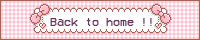
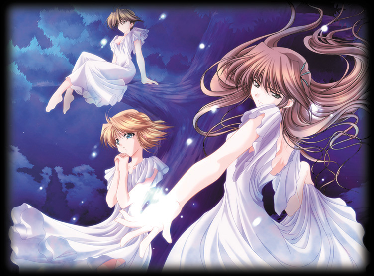
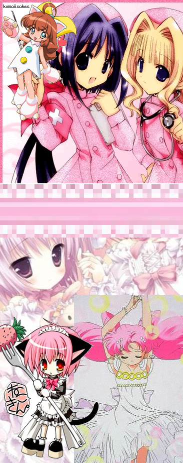

|
"Chocolate Covered Autumns" - Holy Cow 2002 (Gundam Wing/AC) (fanfiction.net)   [Chapter 5 !]
link here! next chapter! Hello! After I read the reviews, believe it or not, I was laughing like
crazy at some of them. Thanks to those who has given me tons of compliments
because I just thought it was outrageously ironic that the same things that
I've said to other authors like: "I love your writing style, and I wish I
can write like that", "I took the time to read this, and now I'm late for
my homework, but it was worth it." Oh my god, you have no clue how I fell
to the ground laughing my ass off on that one. Trust me, if I can get one
penny for every time I dropped everything to focus on one story and then
paid for it later, then I'll probably be rich enough to really own the boys
though with my grades being so ignored, I will probably have to earn my
living this way. ^__^ It was so funny hearing someone telling me that
because the roles have switched in this case and I like the feeling of
that. Thanks for reviewing, it has made my day. Oh yes, thanks to eternal sleeper for the great idea! And to all those very nice people who saw the flaw in why Duo didn't see Heero when he came in. I actually noticed that, but was too lazy to do anything about it last chapter. Also not as funny, but not my fault! I need to get the serious stuff out of the way first before anything else! Chocolate Covered Autumn Chapter 5: We Meet Again "Damn, damn, damn, damn" I mumbled sullenly and glared venomously at the harmless, not to mention completely clueless plate I held in my hands, reflecting on what happened yesterday. Nope, I'm no where near getting over it anytime soon and this plate definitely feels my bitterness, or at least as much as it can feel being an unfeeling object. I want to spread my misery and make someone else feel terrible too. "Wufei, get your fat butt over here!" He nearly jumped at the sudden outburst. Not surprisingly because I really didn't need to scream at him and especially since I was right next to him, yelling directly into his ears can't possibly feel too good to his eardrums. "MAXWELL!" "What?" "I'm less than two feet away from you! And if you would stop staring at the plate, maybe you'd notice that!" The boy does have a point, I grudgingly admitted, but the point of this conversation is to make me feel good, so anything basically goes for that worthwhile cause. Looking defiantly back at Wufei's murderous glare, I bowed my head to look down at my hands and walked away slowly, not saying one single word with my head hanging low and footsteps heavy. Hazily, I heard a stunned gulp behind me. This is very unlike me to walk away from a fight or anything that might help me exercise my mouth and improve my skills. Yeah, go figure; some people take pride in playing the piano, the violin, or any other instruments that are so burdensome to carry around and show off to everyone. Art is another example. Can you really prove to someone the expertise of your abilities if you don't have a canvas or paint? Because it's obvious that the only good a talent does is to show it off. I, on the other hand, am not only the only person that I know with my unique gift, but I can prove to others just how good my talking skills are anytime I want to. What can I say? I'm just naturally talented, but ignore all those who say otherwise. It's not everyday that Relena threatens a person to shut up or else she'd do unmentionables to their childbearing abilities. I take that as the ultimate compliment. "Duo?" Wufei said to my retreating back hesitantly and received no answers. No insults were hurled his way, and no smart ass comments were thrown about how his unceasing rants are only to cover up his insecurities of his manhood. In order words, he was scared as hell at my quietness. "....." "Duo!" The edge of uneasiness has crept into his voice and I can almost hear him mentally sending his objections about this situation to the gods and demanding why they didn't choose Quatre or Relena to endure this torture instead of him. "You ok?" He probably had to muster up all his social skills just to say that alone. It's so obvious that he was clenching his teeth trying to think of what Quatre would do if he was under this circumstance. Nice try, but next time, try not to sound so unwilling. I still didn't answer him. It was four minutes ago that I stopped speaking to him, and that's almost a big red alert in the Duo scale. One minute of silence was considered rare, two to four signaled that something was seriously wrong, and above 10 minutes, well..they've learnt to run for their lives. Hey, I didn't come up with the scale! I continued on my path outside the door and as the bell sounds acknowledged my exit, I spun my head around to meet the nervous eyes of Wufei who looked at me with a wariness that indicated his awkwardness at my unusual behavior. "Your butt is fat." I said softly and in all seriousness before closing the door behind me, just barely missing the view of Wufei collapsing on the ground in shock, surrounded by the laughter that belonged to our customers. I tried hard not to let a single hint of a grin come onto my face, but needless to say, I failed miserably and as the door closed behind me with a click, I started to laugh uncontrollably, recalling the priceless expression on Wufei's face. Walking away with a cheeky smile that caused many peculiar stares, I waved gleefully at those who looked at me as if I'm a fugitive from the asylum and slowly stepped away from me when my gaze scans their way. My steps felt lighter and my head more cloudless than in the past day until suddenly, I heard the sound of the door opening again and a loud, indignant voice called to me in the distance. "Maxwell! My butt is not fat!" His face automatically reddened as soon as he realized that in his rush to correct me, he didn't notice the bewildered public who stared at him in astonishment. He froze in place, looking back at those people and finally settled at scowling at them to mind their own business. A little kid hastily ran behind his mother to hide behind her dress at Wufei's foul expression and his mother quickly grabbed hold of his hands, leading him away while taking extra care to circle around the fuming Wufei. We honestly have got to teach him some social skills. "Awwww! I'm sure Relena wouldn't mind!" My mischievous response if nothing else, made him blush a deeper shade than before. "MAXWELL!!" "Be proud of who you are Wufei!" and with that last line, I scampered away speedily, laughing joyfully all the while, before a justice ranting lunatic decides to come after me and to choke me with my own braid. Not that I don't deserve it of course. ~~~~~~~~~~~~~~~~~~~~~~~~~~~~~~~~~~~~~~~~~~~~~~~~~~~~~~~~~~~~~~~ "Let's see, I need chocolate syrup, pie crusts, and um..strawberry ice cream." Maneuvering in between the busy customers in the aisles, around the arguing grandmothers who were each pulling on one end of a cookie mix, bypass the husband who looked completely out of place in the tampons section. I had to practically jump over a little boy sitting among cereal flakes who apparently decided that it was going to be an early Christmas and unwrapped his first present of the year, a cereal box, digging his hands inside to scoop out the prize within. Something tells me that it's the only present that he's going to get this year. "Got that, got that, and finally....last but not least, mustard!" That was my own little treat and I would go into all the lovely details of what I'm going to use it for, but it's probably considered unsanitary and will probably shock enough health inspectors in 34 states into having seizures so forgive me if I don't go into all the fine points. Walking past the aisles humming to myself joyfully, my eyes drifted past a glass bottle containing some sort of liquid and the notes died in my throat. The bottle was a dark shade of blue, both mysterious and bright when the lights above touch the surface to cast shadows in some areas and a soft luster in all the rest. The contrast between the darkness and softness of the colors reminded me of cobalt eyes that I want desperately to forget. Looking at the surface of the bottle, the reflection of a long haired boy with a large smile slowly turned bitter as the smile became strained and eventually settled while memories flooded the mind. "It still has a long way to go before rightfully earning its name...." "I'm sorry Duo! It never occurred to me that he was the same guy that you were talking about!" Relena looked at me sympathetically. "He came in a few weeks ago while you were making a delivery... And I just remembered after you showed me his picture.." "I'm sorry, but a million people can fit your descriptions of a blue eyed, messy brown haired boy... It just never occurred to me." "But he's not the same as anyone else! You should have noticed him! How can anyone not? Dammit!" "I'm sorry." "Damn him to hell." "The actual tastes are often veiled by the syrupy taste that can only result from an excess of sugar..." How did I get into this mess? Why couldn't I just be perfectly content with my life? Why did I have to have the urge to find this boy and to...ha, I didn't even think past that! The only thought was to find him first when I didn't even know his name. Now that I do know his name though, I wish I never did. Shaking my head clear of these thoughts, I placed the bottle back to where it belonged and practically fled to the checkout lane, abandoning the mustard for another day. It only took a few minutes before I reached a solemn teenager hidden partly by the register. I looked closely at the nametag that hung on his crisp white shirt where it was printed in dark black letters: "Hello, my name is Larry, and I would love to help you." "Hello Larry." I nodded a greeting and apparently, "Larry" isn't as cheerful or helpful as his overly optimistic nametag suggested. His lips didn't even twitch and he maintained his "everyone owes me, and I hate my mom for making me work here because I have to pay her rent" expression. "Whatever." After that oh so articulate exchange, the only sounds that were heard between us were some slight clicks as he punched the prices in, probably feeling bitter about it too, considering that a single piece of steak was more than he can buy with one hour of "hard" work. I don't think I'll eat that after I get home because he seems like the type of people who would do something to it when the store manager isn't looking, and by the way he stared at it sulkily, he probably did. Unconsciously, I started to hum again to myself until "Larry" looked up at me with a very irritated expression on his face that immediately stopped the second half of "I'm a little teapot" from escaping my lips. This guy is like Wufei going through puberty.. "Will that be all?" He said in an emotionless tone while his eyes strayed to the door, fondly watching a group of teenagers smoking outside near the parked cars. Nevermind, Wufei on hormones was never this bad. "Yes..Wait!" Temperately stunned, Larry's attention finally rested on me, or the empty space where I was standing just a moment ago before I hurriedly flew into the aisles again. I raced towards aisle seven, my braid flying behind me until I finally reached my designated goal. Breathing heavily, I grabbed the blue bottle from the shelf, and before I gave myself adequate time to regret my actions, took off for the checkout counter once again. "Here, I want this also." I said, my breath escaping me in short, haggard pants while I took the time to tuck one loose strand of hair behind my ears. He eyed me warily and didn't bother hiding his annoyance at me nor at my hair when his eyes briefly skimmed my braid in a disgusted manner, his face in an unhappy frown. I can just sense the questions in his mind and I've just about had enough of his rude and obnoxious behavior by that point. "Larry, or whatever you want to be called, I don't know much about you, but I do know this. One of these days, you're going to get your ass kicked by someone who is sick and tired of your sorry excuse for manners. I might not be that person, but let me tell you, it would do the world good if someone decides to do us that favor, and we'll be laughing all the while." The object of my threats actually didn't look too terrified, looking at me rebelliously as if challenging a braided girly guy who in his eyes can't possibly be much of a menace. Well, then, I'll just have to change that, don't I? Gesturing to him, I requested for him to come closer. His shoulders progressively tensed as he realized that I may not be as much of a daisy as I looked. When he came close enough so that I can whisper to him without any of the easily scandalized old ladies overhearing, I continued my preaching. "Now, do you want to have children one day? If you do, you might just want to be careful of what you do from now on, because I know a lot of people who will be willing to change that just for fun and games. So if you don't want to permanently sing a better soprano than any other females you know, I'd suggest you grow up, or else, you'll never get to enjoy the benefits that come after puberty." My voice was deadly icy and assured during the entire time that I was whispering in his unwilling ears and in the corner of my eyes, I can see that his eyes widened and his mouth tightened along with the rest of his body as it grew rigid and stiff. I backed away slowly with a smirk on my lips while he remained in that crouched position for a while longer before he finally awakened from his bewilderment, but only succeeded in tripping over his own two feet and falling backwards. I chuckled at his dazed expression and my face returned to its normal cheery appearance, though I don't believe he'll look at me the same way again. "How much is that?" "Um...that will be 34.50.." He gawkily straightened again and added nervously, after hesitating a few seconds, "...sir..." "Sure, here you go." I said cheerfully as if nothing out of the ordinary has happened and that I didn't just threaten a guy with castration a few minutes ago. "Keep the change and have a nice day!" With that and a cheeky wave goodbye, I was prepared to end my shopping expedition in high spirits, but only managed to crash ungracefully into another shopping cart as I made a sharp turn. "Oh, I'm sorry!" I apologized furiously as the owner of the other cart bent down to retrieve a shopping bag that was knocked down at the impact. I hastily bent down also to help him, and when I gathered the various packages and reorganized them in his bags, I straightened again with the his bag held in my arms, particularly careful not to drop anything. As his eyes met mines calmly beneath his wild bangs, the emotions in his eyes were carefully hidden in a deep sea of cobalt, and the lips that I've dreamed about remained quiet. My jaw dropped and my hand came up to point at him. "Oh my god..." He raised one inquiring eyebrow elegantly at my inappropriate response to him, a complete stranger. However, he was no stranger to me as I've spent hours gazing into his picture sourly before I go to bed, with my mind going through his words endlessly. "It still has a long way to go before rightfully earning its name...." "You're Heero Yuy!" I exclaimed loudly with a pointed finger at his face, ignoring how rude I was being. His eyebrow was still arched at my seemingly insane actions. "The bastard!" Well, if he was dubious before, now he's convinced that I'm crazy. In a deep rich voice, he spoke to me for the first time and I don't think I'll ever forget this moment, though what he said leaves much to be desired. "Are you mad?" "NO!" I shook my head frantically, indignant towards the person I was facing, mixed with something that I'm trying to deny desperately. And yet, among all the bitterness towards this man, I still can't refrain from the great desire to explain myself. Somehow, I didn't want him to think badly of me. "You are the food critic who wrote the review on A Little Piece of Heaven." I realize that I sound like a complete dork right now, but hey, it cannot be helped. Think of it this way. This is the guy who I've dreamt of talking to in the past week or more, and finally, he is in my reality, flesh and bones so to speak. How can I possibly act normal under these kinds of circumstances? Ok, so I'm normally a dork, so sue me, I was in denial. "Yes." Unaware of the little dispute going on in my head, he replied simply, looking a bit annoyed at my mindless babble. "You were wrong in your review." I'm a bit tongue-tied presently and this single pitiful line was all that I was able to squeeze out. That definitely got him. Evidently, he's one of those people who take vast pride in their work because the annoyance on his face only became more obvious at my outwardly pompous opinions. I'm sure that if it was legal, he would have whipped out a gun and shot me right there and there, senior citizens with heart problems be damned. "I own that shop." Well, that has got to be the stupidest thing that has ever come out of my mouth next to that one time in which I declared that I was a small rosebud waiting to blossom. Don't ask. That was when I was going through an identity crisis and had just recently realized that I liked penises other than my own. Now, if anything, he'll think I'm this exceedingly conceited chef who is overly sensitive about my art. "And that has to do with me how?" He said, still unruffled even though his face clearly communicates his displeasure at being forced to face an idiot who is completely ignorant, and that if there wasn't such an exasperating person clinging onto him, he would have ditched long ago. Damn, can I describe how infuriated that knowledge makes me? I don't take people who treat me like that well, proven by "Larry" who is behind me, wearing a forced smile and saying ma'am and sir to every single person who walks by, deliberately ignoring his friends who are staring at him weirdly from the parking lot. At that moment, I forgot that this was the guy of my dreams, or that I've been trying to stare at his ass for the past five minutes because I really, really hate it when someone insults my confidence about my own abilities in the kitchen, albeit unconsciously. It's the one thing that I'm immeasurably proud of and this Heero guy is going to hear an earful. "I know that you think I'm mad, or that I'm insane right now but without knowing it, you are insulting the abilities that I'm proud of. You may not realize that you are being offensive but it's not appreciated on any degrees or circumstances. You may be able to insult me indirectly on paper, but when it comes to meeting face to face, without your job as a cover; your attitude towards your work leaves much to be desired." I unquestionably got his attention this time around. "Though I called you a bastard, which was uncalled for and I'm sorry, but I'm still trying to give you my opinions from the point of view as the owner of the shop you criticized." Heero's face didn't change its impassive expression, though his eyes widened just a tad, an almost unnoticeable change. I ignored him and continued on. "You probably take immense pride in your work, but keep in mind that you're not the only one. I do too but you're belittling my pride with your obvious annoyance of me. You might take pride in your work, but also, like you criticized me for, you're not performing your job as well as you believe you are if you are ignoring those that you've judged. If you can't accept their opinions, then you have nothing to be proud of. I'm here asking you for another chance to prove myself and yet you're too sure of yourself to think that you may be wrong." He stayed wordless throughout my entire rant and though I feel as if I should be embarrassed because I've just spilled out my frustration and bitterness towards a person who has never seen me before, but it was too late for me to stop. He looked down at his foot and I regarded him silently. "Being a hypocrite doesn't feel very nice, now does it?" And with that said, I was prepared to walk away, knowing that my chances with him were gone. However small it may be before, it doesn't exist anymore. "Wait." A firm though slightly husky voice stopped my footsteps. I looked back at the owner of that voice only to find him staring at me with a determination and intensity that left me breathless and that I would love to see in another situation, preferably on top of me, screaming my name. "Are you opened this Sunday?" My grin nearly spilt my face into two at his question. "Yes, we are actually. From 9 in the morning to 8 at night. Should I save a seat for you?" "Yes." And after a long pause, he added "Thank you." Can anyone blame me if I was grinning uncontrollably like a fool? "Trust me, the pleasure's all mine." next chapter! |
 |